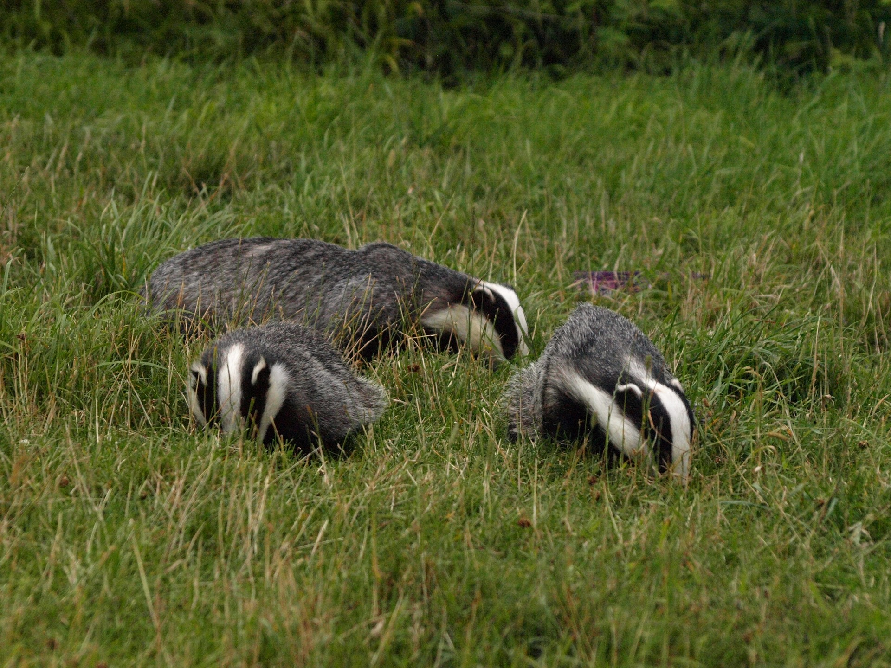

Naturalni predatorzy borsuków
- Głównymi naturalnymi drapieżnikami borsuków są wilki, rysie, psy dzikie i ptaki drapieżne.
- Młode borsuki mogą również padać ofiarą lisów i kun.
- Drapieżniki te polują na borsuki głównie w nocy.
- Borsuki starają się chronić przed drapieżnikami poprzez schronienie się w norach lub w gęstej roślinności.
